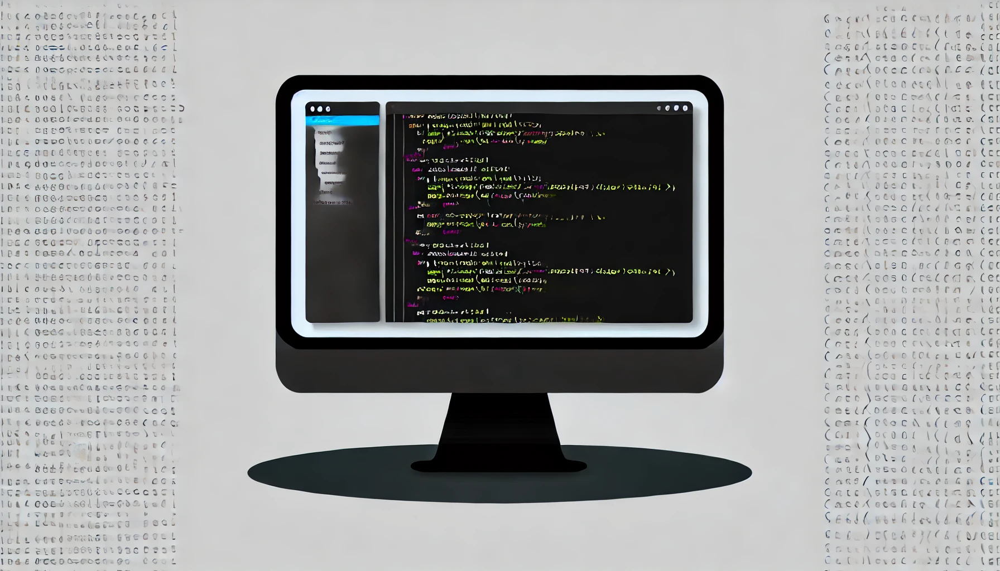

Refactoring is an essential practice in software development, yet I often find that the role of testing doesn’t receive the attention it deserves. While Martin Fowler and Kent Beck stress the importance of small, behavior-preserving transformations for safe refactoring, the true safety net lies in thorough testing. Without it, even the most well-intentioned refactor can introduce risks that undermine the stability of a system.
Martin Fowler and Kent Beck are leading experts in software development with deep experience in practices like agile, XP, and test-driven development. Their approach to making small, incremental improvements without changing the behavior has become a foundational principle for maintaining and evolving codebases efficiently and safely.
Refactoring is a controlled technique for improving the design of an existing code base. Its essence is applying a series of small behavior-preserving transformations, each of which "too small to be worth doing". However the cumulative effect of each of these transformations is quite significant. By doing them in small steps you reduce the risk of introducing errors. You also avoid having the system broken while you are carrying out the restructuring - which allows you to gradually refactor a system over an extended period of time.
(emphasis is mine, read more at martinfowler.com/books/refactoring.html)
Based on that and my own experience working with legacy codebases, this is my take on refactoring:
However, the most challenging aspect of the refactoring process is that it must not change the system's behavior (i.e. break it).
Assuming that we know what the system's behavior should be, we can change the code and then test the system manually but humans are error-prone, and our biases and external factors make of us poor judges of our own work. On top of that, manual testing doesn't work at scale. The bottom line is that, as a software developer, I don't want stakeholders to take my word on not breaking anything. I want a safety net that guarantees it, and can be audited by my fellow team mates.
We can agree that automated testing is the way to go. Tests play a paramount role in refactorings because they're the tool to guarantee we're not introducing any change in the system's behavior after we're done.
As Fowler and Beck highlight the importance of small, incremental changes, it's crucial to remember that true refactoring can only happen within the safety of a robust test harness. Without tests in place, any code changes risk introducing errors, undermining the very purpose of refactoring.
In my experience, however, tests are often more about implementation details than the system's behavior, which puts us in a tough spot when addressing complicated or risky refactorings. We need to understand the system's behavior and then write tests that effectively describe and verify this behavior.
A system's behavior comprises its observable actions (side-effects) and responses (outputs) in reaction to stimuli. Let's drill down into the keywords in this definition:
Outputs should be straightforward to understand: when I drive the system, anything I get in response is the output.
Side-effects can be tricky, though. In a nutshell, they include mutating the global state, I/O operations, and altering the execution flow (exceptions!).
Sometimes, outputs can be difficult to tell apart from side effects. For example, in a Ruby on Rails codebase, we could assume that a controller's output would be the actual HTTP response. However, the response object is part of Rack's state, and Rails mutates it based on the controller's execution. In this context, the controller performs a side effect of mutating an object in the global state, and has no output.
Stimuli would include actions performed by our users, like clicking buttons or sending API requests, receiving webhooks from third-party services, a scheduler running programmed tasks, etc. These are the triggers that initiate some action in our system.
We have established that automated testing is the way to go, and now we have a basic understanding of what to look for when discussing "behavior". Let's move on to the tests.
Refactoring without a test in place is not refactoring - it's just code modification. To truly refactor, we must first establish a test harness that verifies the existing behavior. This ensures that any changes we make preserve the functionality of the system.
Luckily, the stimuli, outputs, and side effects fall directly into common test concerns. In a classic AAA (arrange, action, assert) test structure, stimuli determine the test's action that will drive our SUT, and outputs and side effects are what we need to assert.
This approach applies to any abstraction level we want. It can be as small as a single function or as big as the whole system. The challenging part is determining what our SUT should be and, therefore, determining what layer needs to drive our system in our tests.
Code that lives at lower levels of abstraction is concrete. The combinatorial complexity of how it can be driven and the possible range of outputs and side effects should be small, translating to smaller tests with simpler setups.
The combinatorial complexity grows exponentially as we increase the abstraction level, and writing tests becomes more challenging.
Regardless of the layer our SUT lives at, one key aspect of our tests is that it must not leak or depend upon the SUT's implementation details. We need those tests in green during the whole refactoring exercise.
Now that we understand the system's behavior and can automatically verify it using our tests, the fun part begins.
Refactoring is safe when we have automated tests that guarantee we won't change the system's behavior. By definition, we can't break anything as long as those tests are green, and we can safely explore any idea, take any path.
Refactoring is one of software development's most creative, fun, and satisfying parts. It's also one of the most important activities we must perform because it's literally about paying technical debt. It makes the system more viable and future-proof, ready to absorb change cost-effectively.